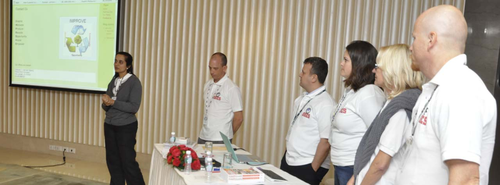

Social Entrepreneurship
Social entrepreneurship is when a social challenge is addressed through a business-like framework. It is a process carried out by people who build or transform an organization to tackle social problems such as poverty, illness, illiteracy, environmental destruction, human rights abuses and corruption to enhance the lives of others. One of the biggest aspects that makes social entrepreneurship unique is that any profit that comes out of the business is recycled back into the system to create a more sustainable organization. Social entrepreneurship is all about shifting economic resources from an area of lower productivity to an area of higher productivity to create more value.
What is service learning?
Service learning is an opportunity to explore a social problem that match a young person's academic, personal, and social interests. Service learning provides an opportunity for students to serve others and acts as a supplement to their academic work by providing students real world perspectives based on experience. Students also obtain a better understanding of the community they live in and learn about the social challenges that people face.
What is the difference?
Social entrepreneurship is when a social mission is addressed through a business-like framework. It could be a not-for-profit or a for-profit organization that uses the income it receives and recycles it back into their own business model. Service learning is integrating classroom teachings into the real world as well as raising awareness of what social problems are out there; it provides students and adults an enlightment process. Social entrepreneurship is taking the awareness and classroom teachings to the next level; it requires committing time and resources to create something that can sustainably address a social problem.

Social entrepreneurs are the students or adults who are considered as change agents. They are not satisfied with the existing solutions to social problems and therefore create or transform their own.
Social entrepreneurs:
- Create a mission that addresses a social value
- Passionately believe about a social problem and dedicate their time to it
- Use innovation to dream up new solutions to existing problems
- Engage in a process of adaptation and continuous innovation and learning
- Are not bogged down by the limited resources they have access to at the moment
- Create a system that empowers their consumer and moves away from continuous "giving away" of resources
- Take responsibility for their actions and can be held accountable for the outcomes they set out to achieve
Example
Social entrepreneurs are motivated by social impact - Hayley Hoverter
Entrepreneurial Idea: Sweet (dis)SOLVE
"Soluble, paperless organic sugar packets-drop them into your coffee and stir."
A typical 16 year old, Hayley Hoverter had a brilliant idea that has brought about social change in her community and has the potential of changing how people drink their coffee. She addressed the social problem of paper waste and how sugar packets, used at popular coffee establishments, contribute to the 40% of paper waste found in landfills. Her idea was to make sugar packets that dissolve immediately in your drink and distribute these to coffee shops such as Starbucks and Pete's Coffee House. Hayley has even won $10,000 at the National Youth Entrepreneurship Challenge to support this initiative.
read more